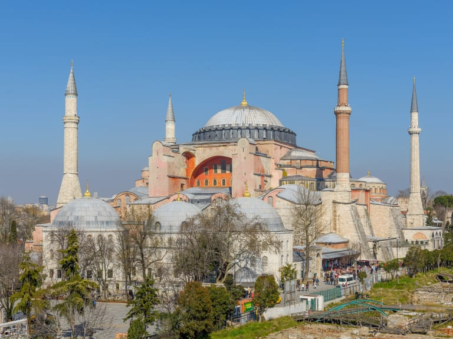
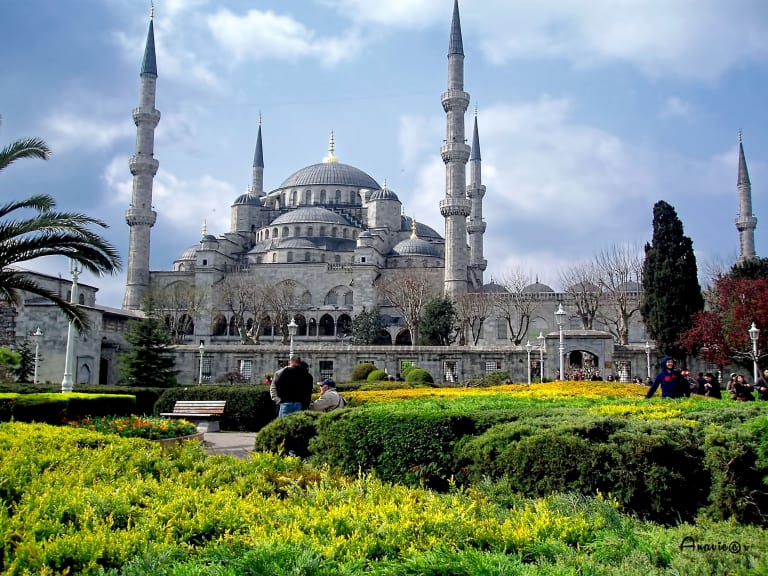
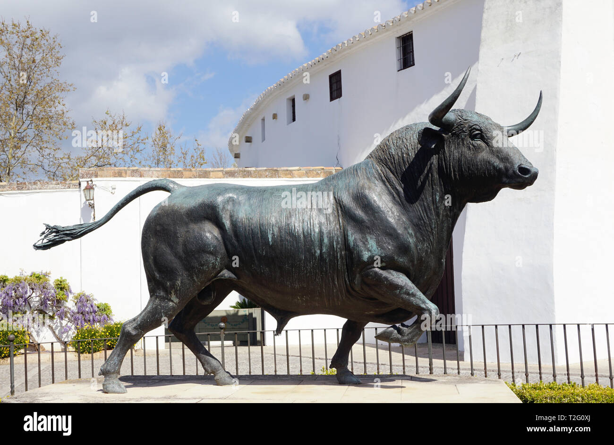
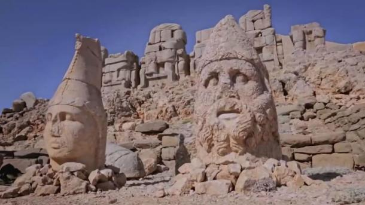
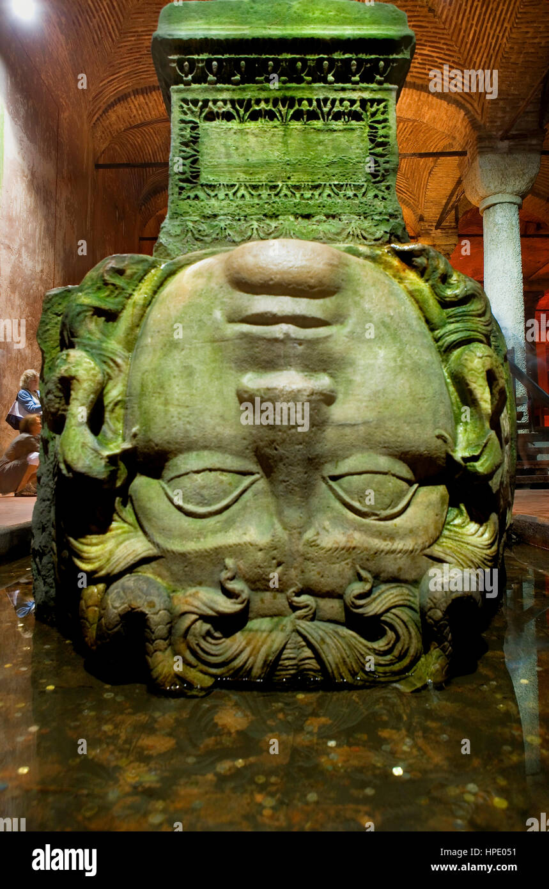
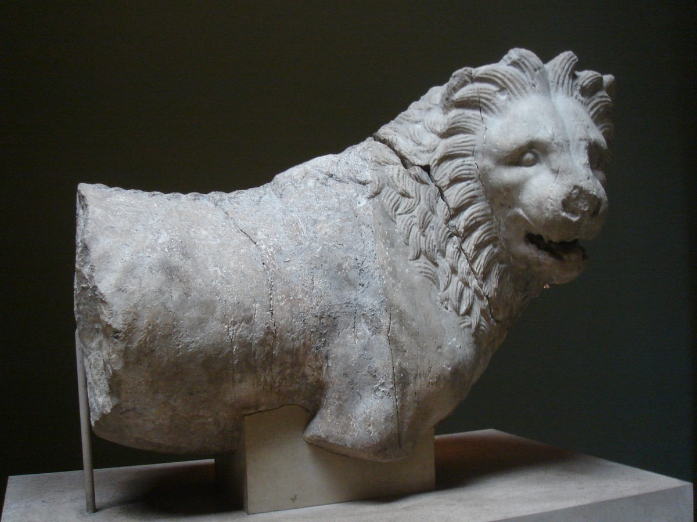
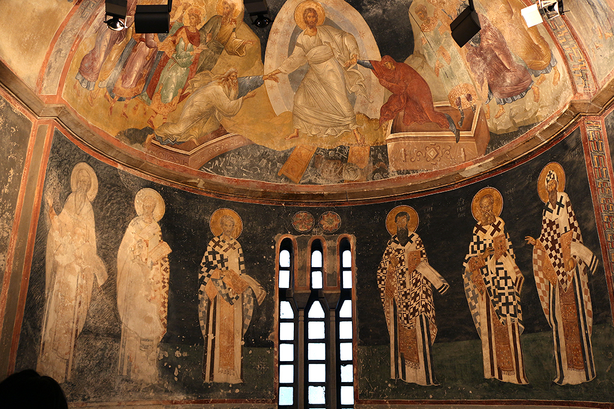
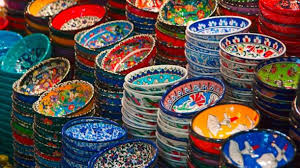

Santa Sofía
Este monumento es una obra de arte de la arquitectura bizantina.
Mezquita Azul
las mejores mezquitas de Estambul, la Mezquita Azul es posible que destaque como la más popula
Toro de lidia
Escultura de bronce, también conocida como el Toro de Éfeso
Las Estatuas de Nemrut
Fueron erigidas por el rey Antíoco I de Comagene como parte de un complejo funerario. Las estatuas representan a deidades y figuras del reino.
La Cabeza de Medusa
Esta en el museo Arqueologico de Estambul, es una de las piezas más intrigantes del museo. La cabeza de Medusa es representada con una expresión aterradora y se cree que tenía propiedades protectoras.
El León de Halicarnaso
Formo parte de un monumento funerario de la ciudad de Halicarnaso(actualmente Bodrum) de las pocas esculturas restantes del mausoleo
Los Frescos de Chora
Localizados en estambul, esta iglesia es reconocida por sus mosaicos y frescos del periodo bizantino.
Los Azulejos de İznik
Estos azulejos ceramicos son conocidos por su diseños coloridos, son usados a menudo como decoracion en las mezquitas, edificios, palacios, etc...
El Tapiz de Beyşehir

de las obras de arte islamico mas importantes, en turquia. estos presentan una serie de escenas narrativas que representan la caza real y escenas de la corte.